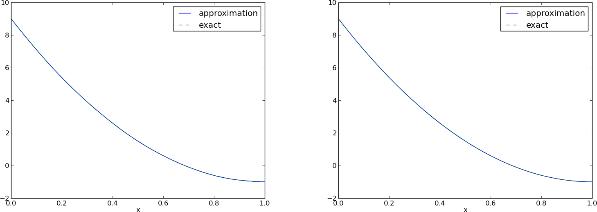
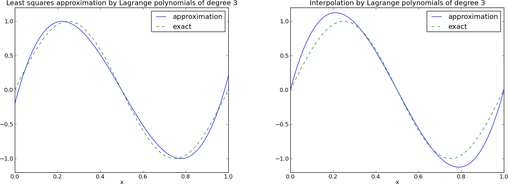
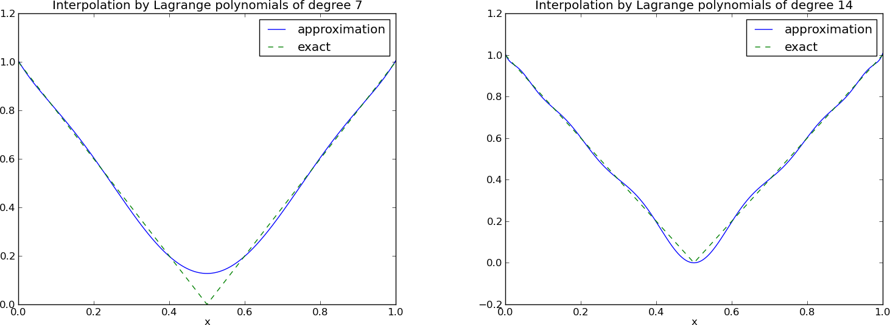
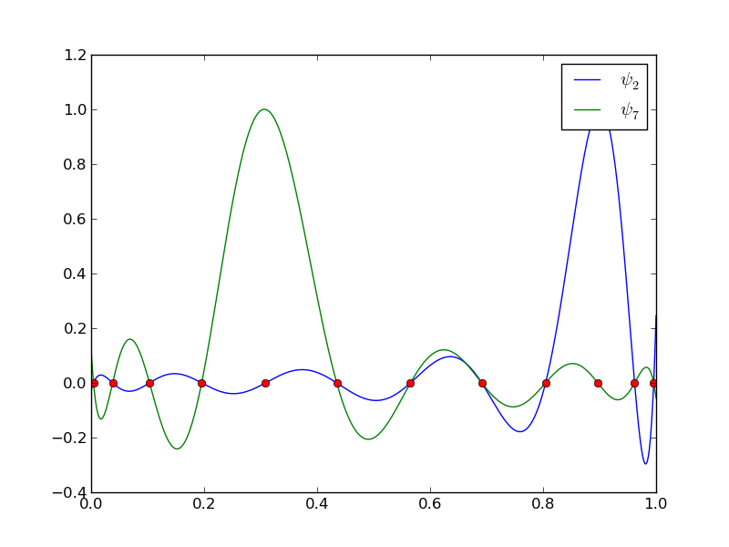

Approximation of functions
Let \( V \) be a function space spanned by a set of basis functions \( \baspsi_0,\ldots,\baspsi_N \), $$ \begin{equation*} V = \hbox{span}\,\{\baspsi_0,\ldots,\baspsi_N\},\end{equation*} $$ such that any function \( u\in V \) can be written as a linear combination of the basis functions: $$ \begin{equation} u = \sum_{j\in\If} c_j\baspsi_j\tp \tag{14} \end{equation} $$ The index set \( \If \) is defined as \( \If =\{0,\ldots,N\} \) and is from now on used both for compact notation and for flexibility in the numbering of elements in sequences.
For now, in this introduction, we shall look at functions of a single variable \( x \): \( u=u(x) \), \( \baspsi_j=\baspsi_j(x) \), \( j\in\If \). Later, we will almost trivially extend the mathematical details to functions of two- or three-dimensional physical spaces. The approximation (14) is typically used to discretize a problem in space. Other methods, most notably finite differences, are common for time discretization, although the form (14) can be used in time as well.
The least squares method
Given a function \( f(x) \), how can we determine its best approximation \( u(x)\in V \)? A natural starting point is to apply the same reasoning as we did for vectors in the section Approximation of general vectors. That is, we minimize the distance between \( u \) and \( f \). However, this requires a norm for measuring distances, and a norm is most conveniently defined through an inner product. Viewing a function as a vector of infinitely many point values, one for each value of \( x \), the inner product of two arbitrary functions \( f(x) \) and \( g(x) \) could intuitively be defined as the usual summation of pairwise "components" (values), with summation replaced by integration: $$ \begin{equation*} (f,g) = \int f(x)g(x)\, \dx \tp \end{equation*} $$ To fix the integration domain, we let \( f(x) \) and \( \baspsi_i(x) \) be defined for a domain \( \Omega\subset\Real \). The inner product of two functions \( f(x) \) and \( g(x) \) is then $$ \begin{equation} (f,g) = \int_\Omega f(x)g(x)\, \dx \tag{15} \tp \end{equation} $$
The distance between \( f \) and any function \( u\in V \) is simply \( f-u \), and the squared norm of this distance is $$ \begin{equation} E = (f(x)-\sum_{j\in\If} c_j\baspsi_j(x), f(x)-\sum_{j\in\If} c_j\baspsi_j(x))\tp \tag{16} \end{equation} $$ Note the analogy with (10): the given function \( f \) plays the role of the given vector \( \f \), and the basis function \( \baspsi_i \) plays the role of the basis vector \( \psib_i \). We can rewrite (16), through similar steps as used for the result (10), leading to $$ \begin{equation} E(c_i, \ldots, c_N) = (f,f) -2\sum_{j\in\If} c_j(f,\baspsi_i) + \sum_{p\in\If}\sum_{q\in\If} c_pc_q(\baspsi_p,\baspsi_q)\tp \end{equation} $$ Minimizing this function of \( N+1 \) scalar variables \( \sequencei{c} \), requires differentiation with respect to \( c_i \), for all \( i\in\If \). The resulting equations are very similar to those we had in the vector case, and we hence end up with a linear system of the form (11), with basically the same expressions: $$ \begin{align} A_{i,j} &= (\baspsi_i,\baspsi_j), \tag{17}\\ b_i &= (f,\baspsi_i)\tp \tag{18} \end{align} $$
The projection (or Galerkin) method
As in the section Approximation of general vectors, the minimization of \( (e,e) \) is equivalent to $$ \begin{equation} (e,v)=0,\quad\forall v\in V\tp \tag{19} \end{equation} $$ This is known as a projection of a function \( f \) onto the subspace \( V \). We may also call it a Galerkin method for approximating functions. Using the same reasoning as in (12)-(13), it follows that (19) is equivalent to $$ \begin{equation} (e,\baspsi_i)=0,\quad i\in\If\tp \tag{20} \end{equation} $$ Inserting \( e=f-u \) in this equation and ordering terms, as in the multi-dimensional vector case, we end up with a linear system with a coefficient matrix (17) and right-hand side vector (18).
Whether we work with vectors in the plane, general vectors, or functions in function spaces, the least squares principle and the projection or Galerkin method are equivalent.
Example: linear approximation
Let us apply the theory in the previous section to a simple problem: given a parabola \( f(x)=10(x-1)^2-1 \) for \( x\in\Omega=[1,2] \), find the best approximation \( u(x) \) in the space of all linear functions: $$ \begin{equation*} V = \hbox{span}\,\{1, x\}\tp \end{equation*} $$ With our notation, \( \baspsi_0(x)=1 \), \( \baspsi_1(x)=x \), and \( N=1 \). We seek $$ \begin{equation*} u=c_0\baspsi_0(x) + c_1\baspsi_1(x) = c_0 + c_1x,\end{equation*} $$ where \( c_0 \) and \( c_1 \) are found by solving a \( 2\times 2 \) the linear system. The coefficient matrix has elements $$ \begin{align} A_{0,0} &= (\baspsi_0,\baspsi_0) = \int_1^21\cdot 1\, \dx = 1,\\ A_{0,1} &= (\baspsi_0,\baspsi_1) = \int_1^2 1\cdot x\, \dx = 3/2,\\ A_{1,0} &= A_{0,1} = 3/2,\\ A_{1,1} &= (\baspsi_1,\baspsi_1) = \int_1^2 x\cdot x\,\dx = 7/3\tp \end{align} $$ The corresponding right-hand side is $$ \begin{align} b_1 &= (f,\baspsi_0) = \int_1^2 (10(x-1)^2 - 1)\cdot 1 \, \dx = 7/3,\\ b_2 &= (f,\baspsi_1) = \int_1^2 (10(x-1)^2 - 1)\cdot x\, \dx = 13/3\tp \end{align} $$ Solving the linear system results in $$ \begin{equation} c_0 = -38/3,\quad c_1 = 10, \end{equation} $$ and consequently $$ \begin{equation} u(x) = 10x - \frac{38}{3}\tp \end{equation} $$ Figure 2 displays the parabola and its best approximation in the space of all linear functions.
Figure 2: Best approximation of a parabola by a straight line.

Implementation of the least squares method
Symbolic integration
The linear system can be computed either symbolically or
numerically (a numerical integration rule is needed in the latter case).
Let us first compute the system and its solution symbolically, i.e.,
using classical "pen and paper" mathematics with symbols.
The Python package sympy can greatly help with this type of
mathematics, and will therefore be frequently used in this text.
Some basic familiarity with sympy is assumed, typically
symbols, integrate, diff, expand, and simplify. Much can be learned
by studying the many applications of sympy that will be presented.
Below is a function for symbolic computation of the linear system,
where \( f(x) \) is given as a sympy expression f involving
the symbol x, psi is a list of expressions for \( \sequencei{\baspsi} \),
and Omega is a 2-tuple/list holding the limits of the domain \( \Omega \):
import sympy as sym
def least_squares(f, psi, Omega):
N = len(psi) - 1
A = sym.zeros((N+1, N+1))
b = sym.zeros((N+1, 1))
x = sym.Symbol('x')
for i in range(N+1):
for j in range(i, N+1):
A[i,j] = sym.integrate(psi[i]*psi[j],
(x, Omega[0], Omega[1]))
A[j,i] = A[i,j]
b[i,0] = sym.integrate(psi[i]*f, (x, Omega[0], Omega[1]))
c = A.LUsolve(b)
# Note: c is a sympy Matrix object, solution is in c[:,0]
u = 0
for i in range(len(psi)):
u += c[i,0]*psi[i]
return u, c
Observe that we exploit the symmetry of the coefficient matrix:
only the upper triangular part is computed. Symbolic integration, also in
sympy, is often time consuming, and (roughly) halving the
work has noticeable effect on the waiting time for the computations to
finish.
Fall back on numerical integration
Obviously, sympy may fail to successfully integrate
\( \int_\Omega\baspsi_i\baspsi_j\dx \), and
especially \( \int_\Omega f\baspsi_i\dx \), symbolically.
Therefore, we should extend
the least_squares function such that it falls back on
numerical integration if the symbolic integration is unsuccessful.
In the latter case, the returned value from sympy's
integrate function is an object of type Integral.
We can test on this type and utilize the mpmath module in
sympy to perform numerical integration of high precision.
Even when sympy manages to integrate symbolically, it can
take an undesirable long time. We therefore include an
argument symbolic that governs whether or not to try
symbolic integration. Here is a complete and
improved version of the previous function least_squares:
def least_squares(f, psi, Omega, symbolic=True):
N = len(psi) - 1
A = sym.zeros((N+1, N+1))
b = sym.zeros((N+1, 1))
x = sym.Symbol('x')
for i in range(N+1):
for j in range(i, N+1):
integrand = psi[i]*psi[j]
if symbolic:
I = sym.integrate(integrand, (x, Omega[0], Omega[1]))
if not symbolic or isinstance(I, sym.Integral):
# Could not integrate symbolically,
# fall back on numerical integration
integrand = sym.lambdify([x], integrand)
I = sym.mpmath.quad(integrand, [Omega[0], Omega[1]])
A[i,j] = A[j,i] = I
integrand = psi[i]*f
if symbolic:
I = sym.integrate(integrand, (x, Omega[0], Omega[1]))
if not symbolic or isinstance(I, sym.Integral):
integrand = sym.lambdify([x], integrand)
I = sym.mpmath.quad(integrand, [Omega[0], Omega[1]])
b[i,0] = I
c = A.LUsolve(b) # symbolic solve
# c is a sympy Matrix object, numbers are in c[i,0]
c = [sym.simplify(c[i,0]) for i in range(c.shape[0])]
u = sum(c[i]*psi[i] for i in range(len(psi)))
return u, c
The function is found in the file approx1D.py.
Plotting the approximation
Comparing the given \( f(x) \) and the approximate \( u(x) \) visually is done
by the following function, which utilizes sympy's lambdify tool to
convert a sympy expression to a Python function for numerical
computations:
def comparison_plot(f, u, Omega, filename='tmp.pdf'):
x = sym.Symbol('x')
f = sym.lambdify([x], f, modules="numpy")
u = sym.lambdify([x], u, modules="numpy")
resolution = 401 # no of points in plot
xcoor = linspace(Omega[0], Omega[1], resolution)
exact = f(xcoor)
approx = u(xcoor)
plot(xcoor, approx)
hold('on')
plot(xcoor, exact)
legend(['approximation', 'exact'])
savefig(filename)
The modules='numpy' argument to lambdify is important
if there are mathematical functions, such as sin or exp
in the symbolic expressions in f or u, and these
mathematical functions are to be used with vector arguments, like
xcoor above.
Both the least_squares and comparison_plot functions are found in
the file approx1D.py. The
comparison_plot function in this file is more advanced and flexible
than the simplistic version shown above. The file ex_approx1D.py
applies the approx1D module to accomplish the forthcoming examples.
Perfect approximation
Let us use the code above to recompute the problem from the section Example: linear approximation where we want to approximate a parabola. What happens if we add an element \( x^2 \) to the basis and test what the best approximation is if \( V \) is the space of all parabolic functions? The answer is quickly found by running
>>> from approx1D import *
>>> x = sym.Symbol('x')
>>> f = 10*(x-1)**2-1
>>> u, c = least_squares(f=f, psi=[1, x, x**2], Omega=[1, 2])
>>> print u
10*x**2 - 20*x + 9
>>> print sym.expand(f)
10*x**2 - 20*x + 9
Now, what if we use \( \baspsi_i(x)=x^i \) for \( i=0,1,\ldots,N=40 \)?
The output from least_squares gives \( c_i=0 \) for \( i>2 \), which
means that the method finds the perfect approximation.
In fact, we have a general result that if \( f\in V \), the least squares and projection/Galerkin methods compute the exact solution \( u=f \). The proof is straightforward: if \( f\in V \), \( f \) can be expanded in terms of the basis functions, \( f=\sum_{j\in\If} d_j\baspsi_j \), for some coefficients \( \sequencej{d} \), and the right-hand side then has entries $$ \begin{equation*} b_i = (f,\baspsi_i) = \sum_{j\in\If} d_j(\baspsi_j, \baspsi_i) = \sum_{j\in\If} d_jA_{i,j} \tp \end{equation*} $$ The linear system \( \sum_jA_{i,j}c_j = b_i \), \( i\in\If \), is then $$ \begin{equation*} \sum_{j\in\If} c_jA_{i,j} = \sum_{j\in\If}d_jA_{i,j}, \quad i\in\If,\end{equation*} $$ which implies that \( c_i=d_i \) for \( i\in\If \).
Ill-conditioning
The computational example in the section Perfect approximation
applies the least_squares function which invokes symbolic
methods to calculate and solve the linear system. The correct
solution \( c_0=9, c_1=-20, c_2=10, c_i=0 \) for \( i\geq 3 \) is perfectly
recovered.
Suppose we convert the matrix and right-hand side to floating-point arrays and then solve the system using finite-precision arithmetics, which is what one will (almost) always do in real life. This time we get astonishing results! Up to about \( N=7 \) we get a solution that is reasonably close to the exact one. Increasing \( N \) shows that seriously wrong coefficients are computed. Below is a table showing the solution of the linear system arising from approximating a parabola by functions on the form \( u(x)=c_0 + c_1x + c_2x^2 + \cdots + c_{10}x^{10} \). Analytically, we know that \( c_j=0 \) for \( j>2 \), but numerically we may get \( c_j\neq 0 \) for \( j>2 \).
| exact | sympy | numpy32 | numpy64 |
| 9 | 9.62 | 5.57 | 8.98 |
| -20 | -23.39 | -7.65 | -19.93 |
| 10 | 17.74 | -4.50 | 9.96 |
| 0 | -9.19 | 4.13 | -0.26 |
| 0 | 5.25 | 2.99 | 0.72 |
| 0 | 0.18 | -1.21 | -0.93 |
| 0 | -2.48 | -0.41 | 0.73 |
| 0 | 1.81 | -0.013 | -0.36 |
| 0 | -0.66 | 0.08 | 0.11 |
| 0 | 0.12 | 0.04 | -0.02 |
| 0 | -0.001 | -0.02 | 0.002 |
The exact value of \( c_j \), \( j=0,1,\ldots,10 \), appears in the first column while the other columns correspond to results obtained by three different methods:
- Column 2: The matrix and vector are converted to
the data structure
sympy.mpmath.fp.matrixand thesympy.mpmath.fp.lu_solvefunction is used to solve the system. - Column 3: The matrix and vector are converted to
numpyarrays with data typenumpy.float32(single precision floating-point number) and solved by thenumpy.linalg.solvefunction. - Column 4: As column 3, but the data type is
numpy.float64(double precision floating-point number).
Increasing \( N \) to 12 makes the numerical solver in numpy
abort with the message: "matrix is numerically singular".
A matrix has to be non-singular to be invertible, which is a requirement
when solving a linear system. Already when the matrix is close to
singular, it is ill-conditioned, which here implies that
the numerical solution algorithms are sensitive to round-off
errors and may produce (very) inaccurate results.
The reason why the coefficient matrix is nearly singular and ill-conditioned is that our basis functions \( \baspsi_i(x)=x^i \) are nearly linearly dependent for large \( i \). That is, \( x^i \) and \( x^{i+1} \) are very close for \( i \) not very small. This phenomenon is illustrated in Figure 3. There are 15 lines in this figure, but only half of them are visually distinguishable. Almost linearly dependent basis functions give rise to an ill-conditioned and almost singular matrix. This fact can be illustrated by computing the determinant, which is indeed very close to zero (recall that a zero determinant implies a singular and non-invertible matrix): \( 10^{-65} \) for \( N=10 \) and \( 10^{-92} \) for \( N=12 \). Already for \( N=28 \) the numerical determinant computation returns a plain zero.
Figure 3: The 15 first basis functions \( x^i \), \( i=0,\ldots,14 \).

On the other hand, the double precision numpy solver does run for
\( N=100 \), resulting in answers that are not significantly worse than
those in the table above, and large powers are
associated with small coefficients (e.g., \( c_j < 10^{-2} \) for \( 10\leq
j\leq 20 \) and \( c < 10^{-5} \) for \( j>20 \)). Even for \( N=100 \) the
approximation still lies on top of the exact curve in a plot (!).
The conclusion is that visual inspection of the quality of the approximation may not uncover fundamental numerical problems with the computations. However, numerical analysts have studied approximations and ill-conditioning for decades, and it is well known that the basis \( \{1,x,x^2,x^3,\ldots,\} \) is a bad basis. The best basis from a matrix conditioning point of view is to have orthogonal functions such that \( (\psi_i,\psi_j)=0 \) for \( i\neq j \). There are many known sets of orthogonal polynomials and other functions. The functions used in the finite element methods are almost orthogonal, and this property helps to avoid problems with solving matrix systems. Almost orthogonal is helpful, but not enough when it comes to partial differential equations, and ill-conditioning of the coefficient matrix is a theme when solving large-scale matrix systems arising from finite element discretizations.
Fourier series
A set of sine functions is widely used for approximating functions
(the sines are also orthogonal as explained more in the section Ill-conditioning). Let us take
$$
\begin{equation*}
V = \hbox{span}\,\{ \sin \pi x, \sin 2\pi x,\ldots,\sin (N+1)\pi x\}
\tp \end{equation*}
$$
That is,
$$
\begin{equation*} \baspsi_i(x) = \sin ((i+1)\pi x),\quad i\in\If\tp \end{equation*}
$$
An approximation to the parabola \( f(x)=10(x-1)^2-1 \) for \( x\in\Omega=[1,2] \) from
the section Example: linear approximation can then be computed by the
least_squares function from the section Implementation of the least squares method:
N = 3
import sympy as sym
x = sym.Symbol('x')
psi = [sym.sin(sym.pi*(i+1)*x) for i in range(N+1)]
f = 10*(x-1)**2 - 1
Omega = [0, 1]
u, c = least_squares(f, psi, Omega)
comparison_plot(f, u, Omega)
Figure 4 (left) shows the oscillatory approximation of \( \sum_{j=0}^Nc_j\sin ((j+1)\pi x) \) when \( N=3 \). Changing \( N \) to 11 improves the approximation considerably, see Figure 4 (right).
Figure 4: Best approximation of a parabola by a sum of 3 (left) and 11 (right) sine functions.

There is an error \( f(0)-u(0)=9 \) at \( x=0 \) in Figure 4 regardless of how large \( N \) is, because all \( \baspsi_i(0)=0 \) and hence
\( u(0)=0 \). We may help the approximation to be correct at \( x=0 \) by
seeking
$$
\begin{equation}
u(x) = f(0) + \sum_{j\in\If} c_j\baspsi_j(x)
\tp
\end{equation}
$$
However, this adjustment introduces a new problem at \( x=1 \) since
we now get an error \( f(1)-u(1)=f(1)-0=-1 \) at this point. A more
clever adjustment is to replace the \( f(0) \) term by a term that
is \( f(0) \) at \( x=0 \) and \( f(1) \) at \( x=1 \). A simple linear combination
\( f(0)(1-x) + xf(1) \) does the job:
$$
\begin{equation}
u(x) = f(0)(1-x) + xf(1) + \sum_{j\in\If} c_j\baspsi_j(x)
\tp
\end{equation}
$$
This adjustment of \( u \) alters the linear system slightly. In the general
case, we set
$$ u(x) = B(x) + \sum_{j\in\If} c_j\baspsi_j(x),$$
and the linear system becomes
$$ \sum_{j\in\If}(\baspsi_i,\baspsi_j)c_j = (f-B,\baspsi_i),\quad i\in\If\tp$$
The calculations can still utilize the least_squares or
least_squares_orth functions, but solve for \( u-b \):
f0 = 0; f1 = -1
B = f0*(1-x) + x*f1
u_sum, c = least_squares_orth(f-b, psi, Omega)
u = B + u_sum
Figure 5 shows the result of the technique for ensuring right boundary values. Even 3 sines can now adjust the \( f(0)(1-x) + xf(1) \) term such that \( u \) approximates the parabola really well, at least visually.
Figure 5: Best approximation of a parabola by a sum of 3 (left) and 11 (right) sine functions with a boundary term.

Orthogonal basis functions
The choice of sine functions \( \baspsi_i(x)=\sin ((i+1)\pi x) \) has a great computational advantage: on \( \Omega=[0,1] \) these basis functions are orthogonal, implying that \( A_{i,j}=0 \) if \( i\neq j \). This result is realized by trying
integrate(sin(j*pi*x)*sin(k*pi*x), x, 0, 1)
in WolframAlpha
(avoid i in the integrand as this symbol means
the imaginary unit \( \sqrt{-1} \)).
Asking WolframAlpha also
about \( \int_0^1\sin^2 (j\pi x) \dx \), we find that it equals
1/2.
With a diagonal matrix we can easily solve for the coefficients
by hand:
$$
\begin{equation}
c_i = 2\int_0^1 f(x)\sin ((i+1)\pi x) \dx,\quad i\in\If,
\end{equation}
$$
which is nothing but the classical formula for the coefficients of
the Fourier sine series of \( f(x) \) on \( [0,1] \). In fact, when
\( V \) contains the basic functions used in a Fourier series expansion,
the approximation method derived in the section Approximation of functions
results in the classical Fourier series for \( f(x) \) (see Exercise 8: Fourier series as a least squares approximation
for details).
With orthogonal basis functions we can make the
least_squares function (much) more efficient since we know that
the matrix is diagonal and only the diagonal elements need to be computed:
def least_squares_orth(f, psi, Omega):
N = len(psi) - 1
A = [0]*(N+1)
b = [0]*(N+1)
x = sym.Symbol('x')
for i in range(N+1):
A[i] = sym.integrate(psi[i]**2, (x, Omega[0], Omega[1]))
b[i] = sym.integrate(psi[i]*f, (x, Omega[0], Omega[1]))
c = [b[i]/A[i] for i in range(len(b))]
u = 0
for i in range(len(psi)):
u += c[i]*psi[i]
return u, c
As mentioned in the section Implementation of the least squares method, symbolic integration may fail or take very long time. It is therefore natural to extend the implementation above with a version where we can choose between symbolic and numerical integration and fall back on the latter if the former fails:
def least_squares_orth(f, psi, Omega, symbolic=True):
N = len(psi) - 1
A = [0]*(N+1) # plain list to hold symbolic expressions
b = [0]*(N+1)
x = sym.Symbol('x')
for i in range(N+1):
# Diagonal matrix term
A[i] = sym.integrate(psi[i]**2, (x, Omega[0], Omega[1]))
# Right-hand side term
integrand = psi[i]*f
if symbolic:
I = sym.integrate(integrand, (x, Omega[0], Omega[1]))
if not symbolic or isinstance(I, sym.Integral):
print 'numerical integration of', integrand
integrand = sym.lambdify([x], integrand)
I = sym.mpmath.quad(integrand, [Omega[0], Omega[1]])
b[i] = I
c = [b[i]/A[i] for i in range(len(b))]
u = 0
u = sum(c[i,0]*psi[i] for i in range(len(psi)))
return u, c
This function is found in the file approx1D.py. Observe that
we here assume that
\( \int_\Omega\basphi_i^2\dx \) can always be symbolically computed,
which is not an unreasonable assumption
when the basis functions are orthogonal, but there is no guarantee,
so an improved version of the function above would implement
numerical integration also for the A[i,i] term.
Numerical computations
Sometimes the basis functions \( \baspsi_i \) and/or the function \( f \)
have a nature that makes symbolic integration CPU-time
consuming or impossible.
Even though we implemented a fall back on numerical integration
of \( \int f\basphi_i \dx \), considerable time might still be required
by sympy just by attempting to integrate symbolically.
Therefore, it will be handy to have function for fast
numerical integration and numerical solution
of the linear system. Below is such a method. It requires
Python functions f(x) and psi(x,i) for \( f(x) \) and \( \baspsi_i(x) \)
as input. The output is a mesh function
with values u on the mesh with points in the array x.
Three numerical integration methods are offered:
scipy.integrate.quad (precision set to \( 10^{-8} \)),
sympy.mpmath.quad (about machine precision), and a Trapezoidal
rule based on the points in x (unknown accuracy, but
increasing with the number of mesh points in x).
def least_squares_numerical(f, psi, N, x,
integration_method='scipy',
orthogonal_basis=False):
import scipy.integrate
A = np.zeros((N+1, N+1))
b = np.zeros(N+1)
Omega = [x[0], x[-1]]
dx = x[1] - x[0]
for i in range(N+1):
j_limit = i+1 if orthogonal_basis else N+1
for j in range(i, j_limit):
print '(%d,%d)' % (i, j)
if integration_method == 'scipy':
A_ij = scipy.integrate.quad(
lambda x: psi(x,i)*psi(x,j),
Omega[0], Omega[1], epsabs=1E-9, epsrel=1E-9)[0]
elif integration_method == 'sympy':
A_ij = sym.mpmath.quad(
lambda x: psi(x,i)*psi(x,j),
[Omega[0], Omega[1]])
else:
values = psi(x,i)*psi(x,j)
A_ij = trapezoidal(values, dx)
A[i,j] = A[j,i] = A_ij
if integration_method == 'scipy':
b_i = scipy.integrate.quad(
lambda x: f(x)*psi(x,i), Omega[0], Omega[1],
epsabs=1E-9, epsrel=1E-9)[0]
elif integration_method == 'sympy':
b_i = sym.mpmath.quad(
lambda x: f(x)*psi(x,i), [Omega[0], Omega[1]])
else:
values = f(x)*psi(x,i)
b_i = trapezoidal(values, dx)
b[i] = b_i
c = b/np.diag(A) if orthogonal_basis else np.linalg.solve(A, b)
u = sum(c[i]*psi(x, i) for i in range(N+1))
return u, c
def trapezoidal(values, dx):
"""Integrate values by the Trapezoidal rule (mesh size dx)."""
return dx*(np.sum(values) - 0.5*values[0] - 0.5*values[-1])
Here is an example on calling the function:
from numpy import linspace, tanh, pi
def psi(x, i):
return sin((i+1)*x)
x = linspace(0, 2*pi, 501)
N = 20
u, c = least_squares_numerical(lambda x: tanh(x-pi), psi, N, x,
orthogonal_basis=True)
The interpolation (or collocation) method
The principle of minimizing the distance between \( u \) and \( f \) is an intuitive way of computing a best approximation \( u\in V \) to \( f \). However, there are other approaches as well. One is to demand that \( u(\xno{i}) = f(\xno{i}) \) at some selected points \( \xno{i} \), \( i\in\If \): $$ \begin{equation} u(\xno{i}) = \sum_{j\in\If} c_j \baspsi_j(\xno{i}) = f(\xno{i}), \quad i\in\If\tp \end{equation} $$ We recognize that the equation \( \sum_j c_j \baspsi_j(\xno{i}) = f(\xno{i}) \) is actually a linear system with \( N+1 \) unknown coefficients \( \sequencej{c} \): $$ \begin{equation} \sum_{j\in\If} A_{i,j}c_j = b_i,\quad i\in\If, \end{equation} $$ with coefficient matrix and right-hand side vector given by $$ \begin{align} A_{i,j} &= \baspsi_j(\xno{i}),\\ b_i &= f(\xno{i})\tp \end{align} $$ This time the coefficient matrix is not symmetric because \( \baspsi_j(\xno{i})\neq \baspsi_i(\xno{j}) \) in general. The method is often referred to as an interpolation method since some point values of \( f \) are given (\( f(\xno{i}) \)) and we fit a continuous function \( u \) that goes through the \( f(\xno{i}) \) points. In this case the \( \xno{i} \) points are called interpolation points. When the same approach is used to approximate differential equations, one usually applies the name collocation method and \( \xno{i} \) are known as collocation points.
Given \( f \) as a sympy symbolic expression f, \( \sequencei{\baspsi} \)
as a list psi, and a set of points \( \sequencei{x} \) as a list or array
points, the following Python function sets up and solves the matrix system
for the coefficients \( \sequencei{c} \):
def interpolation(f, psi, points):
N = len(psi) - 1
A = sym.zeros((N+1, N+1))
b = sym.zeros((N+1, 1))
psi_sym = psi # save symbolic expression
# Turn psi and f into Python functions
x = sym.Symbol('x')
psi = [sym.lambdify([x], psi[i]) for i in range(N+1)]
f = sym.lambdify([x], f)
for i in range(N+1):
for j in range(N+1):
A[i,j] = psi[j](points[i])
b[i,0] = f(points[i])
c = A.LUsolve(b)
# c is a sympy Matrix object, turn to list
c = [sym.simplify(c[i,0]) for i in range(c.shape[0])]
u = sym.simplify(sum(c[i,0]*psi_sym[i] for i in range(N+1)))
return u, c
The interpolation function is a part of the approx1D
module.
We found it convenient in the above function to turn the expressions f and
psi into ordinary Python functions of x, which can be called with
float values in the list points when building the matrix and
the right-hand side. The alternative is to use the subs method
to substitute the x variable in an expression by an element from
the points list. The following session illustrates both approaches
in a simple setting:
>>> import sympy as sym
>>> x = sym.Symbol('x')
>>> e = x**2 # symbolic expression involving x
>>> p = 0.5 # a value of x
>>> v = e.subs(x, p) # evaluate e for x=p
>>> v
0.250000000000000
>>> type(v)
sympy.core.numbers.Float
>>> e = lambdify([x], e) # make Python function of e
>>> type(e)
>>> function
>>> v = e(p) # evaluate e(x) for x=p
>>> v
0.25
>>> type(v)
float
A nice feature of the interpolation or collocation method is that it avoids computing integrals. However, one has to decide on the location of the \( \xno{i} \) points. A simple, yet common choice, is to distribute them uniformly throughout \( \Omega \).
Example
Let us illustrate the interpolation method by approximating our parabola \( f(x)=10(x-1)^2-1 \) by a linear function on \( \Omega=[1,2] \), using two collocation points \( x_0=1+1/3 \) and \( x_1=1+2/3 \):
import sympy as sym
x = sym.Symbol('x')
f = 10*(x-1)**2 - 1
psi = [1, x]
Omega = [1, 2]
points = [1 + sym.Rational(1,3), 1 + sym.Rational(2,3)]
u, c = interpolation(f, psi, points)
comparison_plot(f, u, Omega)
The resulting linear system becomes $$ \begin{equation*} \left(\begin{array}{ll} 1 & 4/3\\ 1 & 5/3\\ \end{array}\right) \left(\begin{array}{l} c_0\\ c_1\\ \end{array}\right) = \left(\begin{array}{l} 1/9\\ 31/9\\ \end{array}\right) \end{equation*} $$ with solution \( c_0=-119/9 \) and \( c_1=10 \). Figure 6 (left) shows the resulting approximation \( u=-119/9 + 10x \). We can easily test other interpolation points, say \( x_0=1 \) and \( x_1=2 \). This changes the line quite significantly, see Figure 6 (right).
Figure 6: Approximation of a parabola by linear functions computed by two interpolation points: 4/3 and 5/3 (left) versus 1 and 2 (right).

The regression method
The interpolation method in the previous section used exactly \( N+1 \) interpolation points. An alternative is to use \( m+1>N+1 \) interpolation points \( \xno{0},\xno{1},\ldots,\xno{m} \). This is particularly relevant if \( f \) is just known through measured point values and we have many such values. The resulting method is called regression and is well known from statistics when fitting a simple (usually polynomial) function to a set of data points.
Overdetermined equation system
Intuitively, we would demand \( u \) to equal \( f \) at all the data points \( \xno{i} \), \( i0,1,\ldots,m \), $$ \begin{equation} u(\xno{i}) = \sum_{j\in\If} c_j \baspsi_j(\xno{i}) = f(\xno{i}), \quad i=0,1,\ldots,m\tp \end{equation} $$ The fundamental problem here is that we have more equations than unknowns since there are \( N+1 \) unknowns and \( m+1>N+1 \) equations. Such a system of equations is called an overdetermined system. We can write it matrix form as $$ \begin{equation} \sum_{j\in\If} A_{i,j}c_j = b_i,\quad i=0,1,\ldots,m, \end{equation} $$ with coefficient matrix and right-hand side vector given by $$ \begin{align} A_{i,j} &= \baspsi_j(\xno{i}), \tag{21}\\ b_i &= f(\xno{i})\tp \tag{22} \end{align} $$ Note that the matrix is a rectangular \( (m+1)\times(N+1) \) matrix since \( i=0,\ldots,m \) and \( j=0,\ldots,N \).
The normal equations derived from a least squares principle
The least squares method is a common technique for solving overdetermined equations systems. Let us write the overdetermined system \( \sum_{j\in\If} A_{i,j}c_j = b_i \) more compactly in matrix form as \( Ac=b \). Since we have more equations than unknowns, it is (in general) impossible to find a vector \( c \) that fulfills \( Ac=b \). The best we can do is to make the residual \( r=b-Ac \) as small as possible. That is, we can find \( c \) such it minimizes the norm Euclidean norm of \( r \): \( ||r|| \). The algebra simplifies significantly by minimizing \( ||r||^2 \) instead. This principle corresponds to a least squares method.
The \( i \)-th component of \( r \) reads \( r_i = b_i -\sum_jA_{i,j}c_j \), so \( ||r||^2 = \sum_ir_i^2 \). Minimizing \( ||r||^2 \) with respect to the unknowns \( c_0,\ldots,c_N \) implies that $$ \begin{equation} \frac{\partial}{\partial k}||r||^2=0,\quad k=0,\ldots,N, \tag{23} \end{equation} $$ which leads to $$ \frac{\partial}{\partial k}\sum_i r_i^2 = \sum_i 2r_i\frac{\partial r_i}{\partial k} =\sum_i 2r_i \frac{\partial}{\partial k}(b_i -\sum_jA_{i,j}c_j) = 2\sum_i r_i(-A_{i,k}) = 0\tp$$ By inserting \( r_i = b_i -\sum_jA_{i,j}c_j \) the last expression we get $$ \sum_i\left(b_i -\sum_jA_{i,j}c_j\right)\left(-A_{i,k}\right) = -\sum_i b_iA_{i,k} + \sum_j (\sum_i A_{i,j}A_{i,k})c_j = 0\tp$$ Introducing the transpose of \( A \), \( A^T \), we know that \( A^T_{i,j}=A_{j,i} \), to the expression \( \sum_i A_{i,j}A_{i,k} \) can be written as \( \sum_i A^T{k,i}A_{i,j} \) and recognized as the formula for the matrix-matrix product \( A^TA \). Also, \( \sum_i b_i A_{i,k} \) can be written \( \sum_i A^T_{k,i}b_i \) and recognized as the matrix-vector product \( A^Tb \). These observations imply that (23) is equivalent to the linear system $$ \begin{equation} \sum_j (\underbrace{\sum_i A^T{k,i}A_{i,j}}{=(A^TA)_{k,j}} c_j = \sum_i \underbrace{A^T_{k,i}b_i}{=(A^Tb)_k},\quad k=0,\ldots,N, \tag{24} \end{equation} $$ or in matrix form, $$ \begin{equation} A^TA = A^Tb\tp \tag{25} \end{equation} $$ The equation system (24) or (25) are known as the normal equations. With \( A \) as an \( (m+1)\times (N+1) \) matrix, \( A^TA \) becomes an \( (N+1)\times (N+1) \) matrix, and \( A^Tb \) becomes a vector of length \( N+1 \). Often, \( m\gg N \), so \( A^TA \) has much smaller size than \( A \).
Many prefer to write the linear system (24) on the standard form \( \sum_j B_{i,j}=d_i \), \( i=0,\ldots,N \). We can easily do so by exchanging the \( i \) and \( k \) index (\( i\leftrightarrow k \)), \( \sum_i A^T{k,i}A_{i,j} = \sum_k A^T{i,k}A_{k,j} \), and setting \( B_{i,j}=\sum_k A^T{i,k}A_{k,j} \). Similarly, we exchange \( i \) and \( k \) in the right-hand side expression and get \( \sum_k A^T_{i,k}b_k = d_i \). Expressing \( B_{i,j} \) and \( d_i \) in terms of the \( \baspsi_i \) and \( \xno{i} \), using (21) and (22), we end up with the formulas $$ \begin{align} B_{i,j} &= \sum_k A^T{i,k}A_{k,j} = \sum_k A{k,i}A_{k,j} =\sum_{k=0}^m\baspsi_i(\xno{k}\baspsi_j(\xno{k}, \tag{26}\\ d_i &=\sum_k A^T_{i,k}b_k = \sum_k A_{k,i}b_k =\sum_{k=0}^m \baspsi_i(\xno{k})f(\xno{k}) \tag{27} \end{align} $$
Implementation
The following function defines the matrix entries \( B_{i,j} \) according to
(26) and the right-hand side
entries \( d_i \) according (27). Thereafter,
it solves the linear system \( \sum_jB_{i,j}c_j=d_i \).
The input data f and psi hold \( f(x) \) and \( \xno{i} \), \( i=0,\ldots,N \),
as symbolic expression, but
since \( m \) is thought to be much larger than \( N \), and there are
loops from \( 0 \) to \( m \), we use numerical computing
to speed up the computations.
def regression(f, psi, points):
N = len(psi) - 1
m = len(points)
# Use numpy arrays and numerical computing
B = np.zeros((N+1, N+1))
d = np.zeros(N+1)
# Wrap psi and f in Python functions rather than expressions
# so that we can evaluate psi at points[i]
x = sym.Symbol('x')
psi_sym = psi # save symbolic expression
psi = [sym.lambdify([x], psi[i]) for i in range(N+1)]
f = sym.lambdify([x], f)
for i in range(N+1):
for j in range(N+1):
B[i,j] = 0
for k in range(m+1):
B[i,j] += psi[i](points[k])*psi[j](points[k])
d[i] = 0
for k in range(m+1):
d[i] += psi[i](points[k])*f(points[k])
c = np.linalg.solve(B, d)
u = sum(c[i]*psi_sym[i] for i in range(N+1))
return u, c
Example
We repeat the computational example from the section The interpolation (or collocation) method, but this time with many more points. The parabola \( f(x)=10(x-1)^2-1 \) is to be approximated by a linear function on \( \Omega=[1,2] \). We divide \( \Omega \) into \( m+2 \) intervals and use the inner \( m+1 \) points:
import sympy as sym
x = sym.Symbol('x')
f = 10*(x-1)**2 - 1
psi = [1, x]
Omega = [1, 2]
m_values = [2-1, 8-1, 64-1]
# Create m+3 points and use the inner m+1 points
for m in m_values:
points = np.linspace(Omega[0], Omega[1], m+3)[1:-1]
u, c = regression(f, psi, points)
comparison_plot(
f, u, Omega,
filename='parabola_by_regression_%d' % (m+1),
points=points,
points_legend='%d interpolation points' % (m+1),
legend_loc='upper left')
Figure 7 shows results for \( m+1=2 \) (left), \( m+1=8 \) (middle), and \( m+1=64 \) (right) data points. The approximating function is not so sensitive to the number of points as long as they cover a significant part of the domain (2 points are too much in the middle, but 8 points cover almost the entire domain, and 64 points do not improve the results much): $$ \begin{align*} u(x) &= 10x - 13.2,\quad 2\hbox{ points}\\ u(x) &= 10x - 12.7,\quad 8\hbox{ points}\\ u(x) &= 10x - 12.7,\quad 64\hbox{ points} \end{align*} $$
Figure 7: Approximation of a parabola by a regression method with varying number of points.

To explicitly make the link to classical regression in statistics, we consider \( f=10(x-1)^2 - 1 + \epsilon \), where \( \epsilon \) is a random, normally distributed variable. The goal in classical regression is to find the straight line that best fits the data points (in a least squares sense). The only difference from the previous setup, is that the \( f(\xno{i}) \) values are based on a function formula, here \( 10(x-1)^2-1 \), plus normally distributed noise. Figure 8 shows three sets of data points, along with the original \( f(x) \) function without noise, and the straight line that is a least squares approximation to the data points.
Figure 8: Approximation of a parabola with noise by a straight line.

We can fit a parabola instead of a straight line, as done in Figure 9. When \( m \) becomes large, the fitted parabola and the original parabola without noise become very close.
Figure 9: Approximation of a parabola with noise by a parabola.
Remark
The regression method is not much used for approximating differential equations or given function, but is central in uncertainty quantification methods such as polynomial chaos expansions.
Lagrange polynomials
In the section Fourier series we explained the advantage with having a diagonal matrix: formulas for the coefficients \( \sequencei{c} \) can then be derived by hand. For an interpolation (or collocation) method a diagonal matrix implies that \( \baspsi_j(\xno{i}) = 0 \) if \( i\neq j \). One set of basis functions \( \baspsi_i(x) \) with this property is the Lagrange interpolating polynomials, or just Lagrange polynomials. (Although the functions are named after Lagrange, they were first discovered by Waring in 1779, rediscovered by Euler in 1783, and published by Lagrange in 1795.) Lagrange polynomials key building blocks in the finite element method, so familiarity with these polynomials will be required anyway.
A Lagrange polynomial can be written as $$ \begin{equation} \baspsi_i(x) = \prod_{j=0,j\neq i}^N \frac{x-\xno{j}}{\xno{i}-\xno{j}} = \frac{x-x_0}{\xno{i}-x_0}\cdots\frac{x-\xno{i-1}}{\xno{i}-\xno{i-1}}\frac{x-\xno{i+1}}{\xno{i}-\xno{i+1}} \cdots\frac{x-x_N}{\xno{i}-x_N}, \tag{28} \end{equation} $$ for \( i\in\If \). We see from (28) that all the \( \baspsi_i \) functions are polynomials of degree \( N \) which have the property $$ \begin{equation} \baspsi_i(x_s) = \delta_{is},\quad \delta_{is} = \left\lbrace\begin{array}{ll} 1, & i=s,\\ 0, & i\neq s, \end{array}\right. \tag{29} \end{equation} $$ when \( x_s \) is an interpolation (collocation) point. Here we have used the Kronecker delta symbol \( \delta_{is} \). This property implies that \( A_{i,j}=0 \) for \( i\neq j \) and \( A_{i,j}=1 \) when \( i=j \). The solution of the linear system is then simply $$ \begin{equation} c_i = f(\xno{i}),\quad i\in\If, \end{equation} $$ and $$ \begin{equation} u(x) = \sum_{j\in\If} f(\xno{i})\baspsi_i(x)\tp \end{equation} $$
The following function computes the Lagrange interpolating polynomial
\( \baspsi_i(x) \), given the interpolation points \( \xno{0},\ldots,\xno{N} \) in
the list or array points:
def Lagrange_polynomial(x, i, points):
p = 1
for k in range(len(points)):
if k != i:
p *= (x - points[k])/(points[i] - points[k])
return p
The next function computes a complete basis using equidistant points throughout \( \Omega \):
def Lagrange_polynomials_01(x, N):
if isinstance(x, sym.Symbol):
h = sym.Rational(1, N-1)
else:
h = 1.0/(N-1)
points = [i*h for i in range(N)]
psi = [Lagrange_polynomial(x, i, points) for i in range(N)]
return psi, points
When x is an sym.Symbol object, we let the
spacing between
the interpolation points, h, be a sympy rational number, so
that we get nice end results in the formulas for \( \baspsi_i \).
The other case, when x is a plain Python float,
signifies numerical computing, and then we let h be a floating-point
number.
Observe that the Lagrange_polynomial function works equally well
in the symbolic and numerical case - just think of x being an
sym.Symbol object or a Python float.
A little interactive session illustrates the difference between symbolic
and numerical computing of the basis functions and points:
>>> import sympy as sym
>>> x = sym.Symbol('x')
>>> psi, points = Lagrange_polynomials_01(x, N=3)
>>> points
[0, 1/2, 1]
>>> psi
[(1 - x)*(1 - 2*x), 2*x*(2 - 2*x), -x*(1 - 2*x)]
>>> x = 0.5 # numerical computing
>>> psi, points = Lagrange_polynomials_01(x, N=3)
>>> points
[0.0, 0.5, 1.0]
>>> psi
[-0.0, 1.0, 0.0]
The Lagrange polynomials are very much used in finite element methods because of their property (29).
Approximation of a polynomial
The Galerkin or least squares method lead to an exact approximation if \( f \) lies in the space spanned by the basis functions. It could be of interest to see how the interpolation method with Lagrange polynomials as basis is able to approximate a polynomial, e.g., a parabola. Running
for N in 2, 4, 5, 6, 8, 10, 12:
f = x**2
psi, points = Lagrange_polynomials_01(x, N)
u = interpolation(f, psi, points)
shows the result that up to N=4 we achieve an exact approximation,
and then round-off errors start to grow, such that
N=15 leads to a 15-degree polynomial for \( u \) where
the coefficients in front of \( x^r \) for \( r>2 \) are
of size \( 10^{-5} \) and smaller.
Successful example
Trying out the Lagrange polynomial basis for approximating \( f(x)=\sin 2\pi x \) on \( \Omega =[0,1] \) with the least squares and the interpolation techniques can be done by
x = sym.Symbol('x')
f = sym.sin(2*sym.pi*x)
psi, points = Lagrange_polynomials_01(x, N)
Omega=[0, 1]
u, c = least_squares(f, psi, Omega)
comparison_plot(f, u, Omega)
u, c = interpolation(f, psi, points)
comparison_plot(f, u, Omega)
Figure 10 shows the results. There is little difference between the least squares and the interpolation technique. Increasing \( N \) gives visually better approximations.
Figure 10: Approximation via least squares (left) and interpolation (right) of a sine function by Lagrange interpolating polynomials of degree 3.

Less successful example
The next example concerns interpolating \( f(x)=|1-2x| \) on \( \Omega =[0,1] \) using Lagrange polynomials. Figure 11 shows a peculiar effect: the approximation starts to oscillate more and more as \( N \) grows. This numerical artifact is not surprising when looking at the individual Lagrange polynomials. Figure 12 shows two such polynomials, \( \psi_2(x) \) and \( \psi_7(x) \), both of degree 11 and computed from uniformly spaced points \( \xno{x_i}=i/11 \), \( i=0,\ldots,11 \), marked with circles. We clearly see the property of Lagrange polynomials: \( \psi_2(\xno{i})=0 \) and \( \psi_7(\xno{i})=0 \) for all \( i \), except \( \psi_2(\xno{2})=1 \) and \( \psi_7(\xno{7})=1 \). The most striking feature, however, is the significant oscillation near the boundary. The reason is easy to understand: since we force the functions to zero at so many points, a polynomial of high degree is forced to oscillate between the points. The phenomenon is named Runge's phenomenon and you can read a more detailed explanation on Wikipedia.
Remedy for strong oscillations
The oscillations can be reduced by a more clever choice of
interpolation points, called the Chebyshev nodes:
$$
\begin{equation}
\xno{i} = \half (a+b) + \half(b-a)\cos\left( \frac{2i+1}{2(N+1)}pi\right),\quad i=0\ldots,N,
\end{equation}
$$
on the interval \( \Omega = [a,b] \).
Here is a flexible version of the Lagrange_polynomials_01 function above,
valid for any interval \( \Omega =[a,b] \) and with the possibility to generate
both uniformly distributed points and Chebyshev nodes:
def Lagrange_polynomials(x, N, Omega, point_distribution='uniform'):
if point_distribution == 'uniform':
if isinstance(x, sym.Symbol):
h = sym.Rational(Omega[1] - Omega[0], N)
else:
h = (Omega[1] - Omega[0])/float(N)
points = [Omega[0] + i*h for i in range(N+1)]
elif point_distribution == 'Chebyshev':
points = Chebyshev_nodes(Omega[0], Omega[1], N)
psi = [Lagrange_polynomial(x, i, points) for i in range(N+1)]
return psi, points
def Chebyshev_nodes(a, b, N):
from math import cos, pi
return [0.5*(a+b) + 0.5*(b-a)*cos(float(2*i+1)/(2*N+1))*pi) \
for i in range(N+1)]
All the functions computing Lagrange polynomials listed
above are found in the module file Lagrange.py.
Figure 13 shows the improvement of using Chebyshev nodes, compared with the equidistant points in Figure 11. The reason for this improvement is that the corresponding Lagrange polynomials have much smaller oscillations, which can be seen by comparing Figure 14 (Chebyshev points) with Figure 12 (equidistant points). Note the different scale on the vertical axes in the two figures.
Another cure for undesired oscillations of higher-degree interpolating polynomials is to use lower-degree Lagrange polynomials on many small patches of the domain. This is actually the idea pursued in the finite element method. For instance, linear Lagrange polynomials on \( [0,1/2] \) and \( [1/2,1] \) would yield a perfect approximation to \( f(x)=|1-2x| \) on \( \Omega = [0,1] \) since \( f \) is piecewise linear.
Figure 11: Interpolation of an absolute value function by Lagrange polynomials and uniformly distributed interpolation points: degree 7 (left) and 14 (right).

Figure 12: Illustration of the oscillatory behavior of two Lagrange polynomials based on 12 uniformly spaced points (marked by circles).

Figure 13: Interpolation of an absolute value function by Lagrange polynomials and Chebyshev nodes as interpolation points: degree 7 (left) and 14 (right).

Figure 14: Illustration of the less oscillatory behavior of two Lagrange polynomials based on 12 Chebyshev points (marked by circles).

How does the least squares or projection methods work with Lagrange
polynomials?
We can just call the least_squares function, but
sympy has problems integrating the \( f(x)=|1-2x| \)
function times a polynomial, so we need to fall back on numerical
integration.
def least_squares(f, psi, Omega):
N = len(psi) - 1
A = sym.zeros((N+1, N+1))
b = sym.zeros((N+1, 1))
x = sym.Symbol('x')
for i in range(N+1):
for j in range(i, N+1):
integrand = psi[i]*psi[j]
I = sym.integrate(integrand, (x, Omega[0], Omega[1]))
if isinstance(I, sym.Integral):
# Could not integrate symbolically, fall back
# on numerical integration with mpmath.quad
integrand = sym.lambdify([x], integrand)
I = sym.mpmath.quad(integrand, [Omega[0], Omega[1]])
A[i,j] = A[j,i] = I
integrand = psi[i]*f
I = sym.integrate(integrand, (x, Omega[0], Omega[1]))
if isinstance(I, sym.Integral):
integrand = sym.lambdify([x], integrand)
I = sym.mpmath.quad(integrand, [Omega[0], Omega[1]])
b[i,0] = I
c = A.LUsolve(b)
c = [sym.simplify(c[i,0]) for i in range(c.shape[0])]
u = sum(c[i]*psi[i] for i in range(len(psi)))
return u, c
The idea of avoiding oscillatory solutions by using lower-order Lagrange polynomials on smaller patches throughout the domain, is important in the finite element method, and the next section introduces finite element basis functions based on Lagrange polynomials.